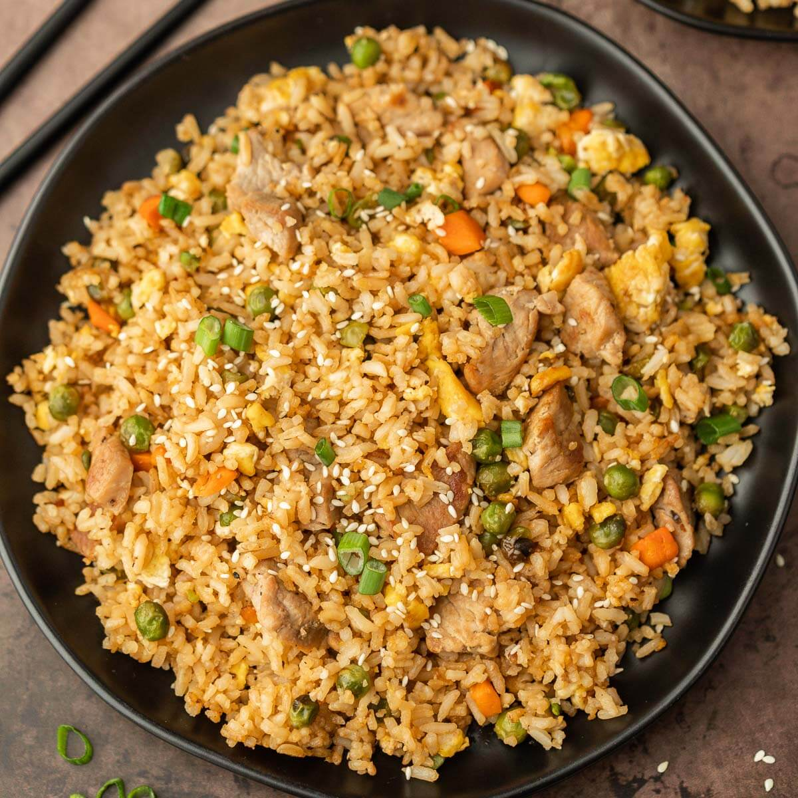

Fried Rice

Description
Fried rice is a classic dish characterized by the stir-frying of pre-cooked rice with a combination of ingredients. Commonly associated with Asian cuisine, it involves a medley of vegetables, protein (such as chicken, shrimp, or tofu), and scrambled eggs, all sautéed together in a wok or skillet. The key to achieving the distinct flavor lies in the use of soy sauce, garlic, and sometimes additional seasonings like ginger, oyster sauce, or sesame oil. Garnished with green onions, cilantro, or sesame seeds, fried rice offers a delightful combination of textures and tastes, making it a versatile and beloved dish enjoyed worldwide.
Ingredients
- Rice
- Vegetables
- Eggs
- Garlic
- Ginger
- Soy-Sauce
Steps
- To make delicious fried rice, gather your ingredients—pre-cooked rice, vegetables (like carrots, peas, and onions), your preferred protein (chicken, shrimp, tofu), eggs, and soy sauce.
- Start by stir-frying your chosen protein until fully cooked. Once done, set it aside for later use in the dish.
- In the same cooking pan, stir-fry your chopped vegetables until they reach a slight tenderness. Push them to the side, introduce the beaten eggs, and scramble until fully cooked.
- Reintroduce the pre-cooked rice and the cooked protein back into the pan. Mix all the components thoroughly, creating a harmonious blend of flavors and textures.
- Drizzle soy sauce over the mixture, ensuring an even distribution of flavors. Optionally, add minced garlic, ginger, or a touch of sesame oil for extra depth. Garnish your creation with green onions, cilantro, or sesame seeds. Serve your homemade fried rice hot and enjoy the delightful combination of tastes and textures in every bite.